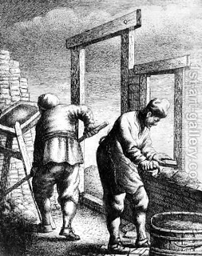

Kiddushin 82 - Conclusion
Rabbi Meir says: "One should always teach his son a clean and easy trade, and he should pray to He to Whom all wealth and possessions belong, because there is no trade that does not include indigence and wealth. For poverty is not the result of a trade, nor is wealth the result of a trade; rather, all is in accordance with one's merit."
Rabbi Nehorai says: "I put aside every trade in the world and I teach my son only Torah, for a man benefits from its reward in this world, and the principal remains for him in the World to Come."
Mystical meaning of Kiddushin
The bride is symbolic of Tzedek - righteousness and also of being poor. When she is given a coin - a prutah - the minimum amount for giving, she becomes symbolic of Tzedakah, charity. She then turns her face to the groom, and this face-to-face meeting, symbolic of God talking to Moses, prepares them for the honor of Chupah.
Mystical meaning of Chanukah (Since today is Chanukah)
Chanukah is the contrast between " Beauty is vanity but God-fearing woman, she should be praised ," and Kiddushin symbolizes this choice.